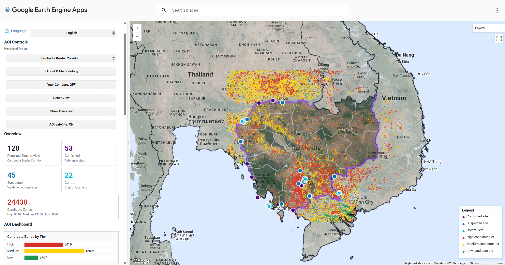
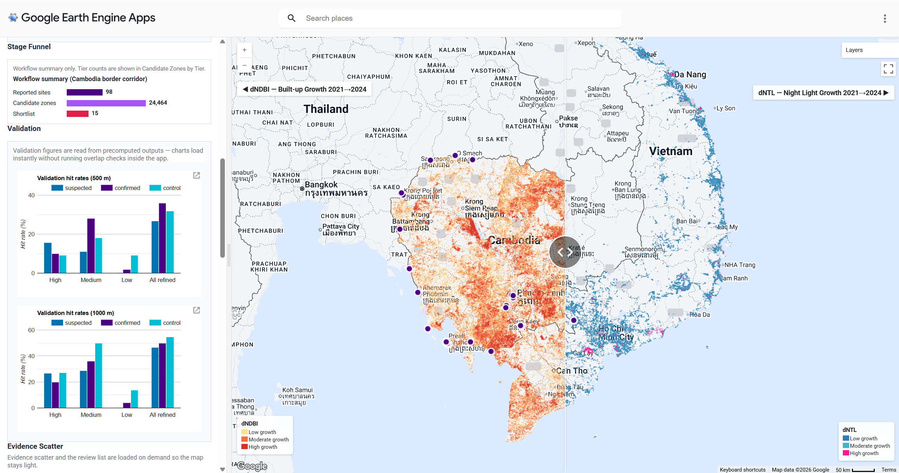

Project Summary
This project develops a Google Earth Engine (GEE)–based application for exploring candidate locations that are spatially similar to documented scam compound sites, and explore spatial patterns of suspected scam compounds in Southeast Asia, specifically within Cambodia-Vietnam AOI. This model, referencing data from Amnesty International(2025) and Australian Strategic Policy Institute (ASPI) (2025), combines Google Satellite Embedding similarity, Sentinel-2 change indicators, VIIRS night-time lights, and contextual distance variables, to identify high-risk areas. The Cambodia–Vietnam analysis contains 53 confirmed reported sites, 45 suspected reported sites, and 22 control points within the AOI. Confirmed sites were used to build a reproducible embedding-based screening workflow, while suspected and control points were used to evaluate whether the output behaved as a broad screening layer or a more selective prioritisation layer. The interactive web platform can provides a interpretable way to explore possible compound-like development patterns for researchers, journalists and human-rights monitors, and help governments and law enforcement agencies combat criminal gangs to some extent, and better protect national border security.

Resource From: United Nations Office on Drugs and Crime (2023, 2025), Global Initiative (2026)
Problem Statement
Transnational organized crime and the rapid expansion of cyber scams across Southeast Asia have emerged as a significant humanitarian and security crisis (UNODC, 2025). Despite their scale, these compounds remain difficult to systematically detect due to their strategic placement in border regions and their deliberate spatial overlap with legitimate commercial environments (ASPI, 2025). Traditional monitoring is often hindered by fragmented reporting and a critical shortage of verified ground-truth data (Global Initiative, 2026). Our application addresses this gap by providing a reproducible, satellite-based screening tool that bridges the divide between remote sensing technology and policy-oriented investigation. By grounding our analysis in documented reference cases, this platform offers an intuitive interface for researchers and policymakers to visualize high-risk expansion zones, helps overcome long-standing barriers in cross-border data sharing and regional security planning.
End User
Our platform is designed for human rights monitoring agencies, investigative journalists, and policy-oriented researchers working to combat transnational crime in Southeast Asia. Limited public information and complex on-the-ground situations have long hampered the effectiveness of international interventions. Our interactive map is designed to improves access to spatial screening outputs, and provides a structured evidence base for further investigation into forced labour, human trafficking, and related forms of abuse.
Data
| Category | Dataset | Description | Source |
|---|---|---|---|
| Satellite Embedding | Google Satellite Embedding V1 Annual | 64-dimensional annual embedding vectors at 10 m resolution, used for Stage 1 similarity search | GEE Catalog |
| Satellite Imagery | Sentinel-2 SR Harmonised | Multispectral imagery for NDBI, NDVI and visual basemap (2021–2024) | GEE Catalog |
| Night-time Lights | VIIRS DNB Monthly V1 VCMCFG | Night-time radiance for activity growth detection (dNTL 2021–2024) | GEE Catalog |
| Boundaries | USDOS LSIB Simple 2017 | Country boundary geometries for AOI definition | GEE Catalog |
| Boundaries | FAO GAUL 2015 | Province-level administrative boundaries | GEE Catalog |
| Reference Sites | Confirmed Scam Locations | 53 confirmed sites from Amnesty International and ASPI | Amnesty International |
| Reference Sites | Suspected and Control Points | 45 suspected sites and 22 control points for validation | ASPI |
Based on precise location data from Amnesty International (2025) and ASPI (2025), our final compiled dataset includes confirmed points, suspected points, and control points on GitHub: scam_points_update.csv
Methodology
The analysis pipeline operates in two stages:
Stage 1 — Satellite Embedding Similarity
Stage 1 uses the Google Satellite Embedding V1 annual dataset for 2024. In this dataset, each pixel is represented by a 64-dimensional embedding vector that summarises multi-source satellite information. Within the Cambodia–Vietnam Aoi, 53 confirmed reported sites were available, but only three reproducible confirmed Cambodia reference samples were used for the current embedding run. This small reference set was retained after sensitivity testing because increasing the reference count did not materially improve recovery of known sites, but increased computation.
For each reference sample, the embedding vector was compared with every pixel in the AOI using dot-product similarity. The final similarity surface was calculated as the mean of each reference similarity images:
\[ s_j(x)=\mathbf{e}(x)\cdot\mathbf{r}_j =\sum_{k=0}^{63} e_k(x)r_{j,k} \]
\[ S(x)=\frac{1}{J}\sum_{j=1}^{J}s_j(x) \]
Pixels were retained where their mean similarity exceeded the 97th percentile of the sampled similarity distribution:
\[ \text{Stage 1 candidate}(x)= \begin{cases} 1, & S(x)\geq P_{97}(S) \\ 0, & S(x)<P_{97}(S) \end{cases} \]
- (x) is a pixel within the AOI;
- ((x)) is the 64-dimensional embedding vector of that pixel;
- (_j) is the embedding vector of the j-th confirmed reference sample;
- J is the current number of reference samples (J=3 in this condition);
- (S(x)) is the final mean similarity image.
Small isolated fragments were removed using a connected pixel filter, and the cleaned raster was vectorised into Stage 1 candidate points. The p97 setting was selected because it was tighter than p95 while retaining high coverage of known confirmed and suspected locations.
Stage 2 — Indicator-Based Refinement
Stage 1 is intentionally broad, so Stage 2 refines the candidate set using interpretable contextual indicators. Candidate points were converted into 500 m buffered zones, and mean values were extracted from a 2021–2024 metric stack containing Sentinel-2 spectral indices, VIIRS night-time lights, and distance variables.
The main change metrics are:
\[ \text{NDVI}=\frac{NIR-Red}{NIR+Red} \]
\[ \text{NDBI}=\frac{SWIR-NIR}{SWIR+NIR} \]
\[ \Delta X = X_{2024}-X_{2021} \]
And an increase in built up signal combined with a decrease in vegetation signal is defined as development evidence :
\[ \text{development flag} = (\Delta \text{NDBI} > 0) \land (\Delta \text{NDVI} < 0) \]
Activity evidence is defined as an increase in night time light radiance:
\[ \text{activity flag} = \Delta \text{NTL} > 0 \]
Candidates were then assigned to priority tiers. High priority candidates triggered both development and activity flags; medium priority candidates triggered one of the two flags; and low-priority candidates triggered neither flag but retained to preserve uncertainty. Border distance was retained as contextual information rather than used as a hard filtering gate in the final tiering.
Validation
Validation conduct in two parts. First, Stage 1 was evaluated using raster overlap checks against suspected sites, non-reference confirmed sites, held out confirmed samples, and control points. This shows that the 97th percentile embedding layer had very high recall, including a mean held out confirmed recall of 1.0 across repeated splits, but it also captured control points. Therefore, Stage 1 is interpreted as a high recall screening surface rather than a precise classifier.
Second, Stage 2 was evaluated using vector overlap checks for the high, medium, low, and all refined candidate layers. The refined layer reduced control hits from 22/22 under Stage 1 to 7/22 for all refined candidates within 500 m, but recall for known sites also dropped. Therefore, the final output should be read as a prioritisation layer for further investigation, not as a verified list of scam compounds.
Interface
The interface is designed as a screening dashboard rather than a static map. The main view uses the Cambodia Border Corridor because it shows the core workflow most clearly: candidate tiers, reported site markers, boundary context and the AOI summary panel. The second view shows the Year Compare mode, where users can drag the divider to compare built-up growth (dNDBI) and night light growth (dNTL) across the same area.

Cambodia Border Corridor view

Year Compare view
The left control panel lets users switch regional focus, toggle Year Compare, reset the map and review AOI-level counts. The map layers combine candidate zones by tier, confirmed, suspected and control sites, province boundaries and highlighted shared borders.
The Application
The live Google Earth Engine application is embedded below. If the embedded view loads slowly or is blocked by the browser, open it directly in a new tab: Scam Compound Explorer.
How it Works
The application is built entirely in Google Earth Engine and links the analytical pipeline to an interactive screening interface. The workflow is organised into four parts.
1. Insights and Objectives
The tool responds to a practical analytical challenge: reported scam compounds are often clustered near border corridors, special economic zones and rapidly changing peri-urban landscapes, but public evidence remains uneven across countries. Instead of treating the map as a definitive inventory, the application provides a transparent screening layer that helps users compare known reports with satellite-derived signals of recent construction and night-time activity.
The main objective is to prioritise locations for further investigation. The app combines embedding similarity, Sentinel-2 built-up change, VIIRS night light change and proximity context, then presents the results as high, medium and low candidate tiers. Confirmed, suspected and control sites are retained in the interface so users can assess where the model aligns with existing evidence and where it may be over- or under-selecting.
2. Data Preparation and Precomputations
Before the app is loaded, the main candidate surfaces and diagnostic metrics are prepared in Google Earth Engine. Precomputing these outputs keeps the interface responsive and avoids running expensive overlap checks every time users change views. Below are key code examples illustrating the core logic. Stage 1: Embedding Similarity
The first code cell loads the 2024 Google Satellite Embedding image for the Cambodia–Vietnam AOI and samples embedding vectors at the selected confirmed reference sites. Each sampled reference vector is converted back into a constant image so that it can be compared pixel by pixel with the full embedding image. The dot product across embedding bands produces one similarity image per reference sample, and these images are averaged to create the final Stage 1 similarity surface.
var embeddings = ee.ImageCollection('GOOGLE/SATELLITE_EMBEDDING/V1/ANNUAL');
var embeddingImage = embeddings
.filter(ee.Filter.date(startDate, endDate))
.mosaic()
.clip(analysisGeometry);
var sampleEmbeddings = embeddingImage.sampleRegions({
collection: referenceSamples,
scale: sampleScale,
geometries: false,
tileScale: 4
});
var similarityImages = ee.ImageCollection.fromImages(
sampleEmbeddings.toList(sampleEmbeddings.size()).map(function(f) {
f = ee.Feature(f);
var sampleValues = ee.List(
bandNames.map(function(b) {
return f.get(ee.String(b));
})
);
var sampleVectorImage = ee.Image.constant(sampleValues)
.rename(bandNames)
.toFloat();
return sampleVectorImage
.multiply(embeddingImage)
.reduce(ee.Reducer.sum())
.rename('similarity');
})
);
var meanSimilarity = similarityImages.mean();This step produces a broad screening. Pixels above the p97 similarity threshold are treated as candidate areas because they resemble the reference sites in embedding space. The validation results show that this layer has very high recall for known confirmed sites, but it is not sufficiently selective on its own, so the output is passed into stage 2 for contextual refinement.
Stage 2.1: Computing Candidate-Level Metrics
Stage 2 converts the broad embedding output into interpretable candidate level evidence. The code below builds annual Sentinel-2 median composites for 2021 and 2024, then computes NDVI and NDBI for both years. The difference bands, dNDVI_2021_2024 and dNDBI_2021_2024, are used to describe vegetation loss and built up signal change around each candidate zone.
function getS2Composite(year, aoi) {
var startDate = ee.Date.fromYMD(year, 1, 1);
var endDate = startDate.advance(1, 'year');
return ee.ImageCollection('COPERNICUS/S2_SR_HARMONIZED')
.filterBounds(aoi)
.filterDate(startDate, endDate)
.filter(ee.Filter.lt('CLOUDY_PIXEL_PERCENTAGE', 20))
.map(maskS2Clouds)
.select(['B2', 'B3', 'B4', 'B8', 'B11'])
.median()
.clip(aoi);
}
function buildS2MetricsImage(yearA, yearB, aoi) {
var s2A = getS2Composite(yearA, aoi);
var s2B = getS2Composite(yearB, aoi);
var ndviA = s2A.normalizedDifference(['B8', 'B4']).rename('NDVI_' + yearA);
var ndviB = s2B.normalizedDifference(['B8', 'B4']).rename('NDVI_' + yearB);
var ndbiA = s2A.normalizedDifference(['B11', 'B8']).rename('NDBI_' + yearA);
var ndbiB = s2B.normalizedDifference(['B11', 'B8']).rename('NDBI_' + yearB);
var dNDVI = ndviB.subtract(ndviA).rename('dNDVI_' + yearA + '_' + yearB);
var dNDBI = ndbiB.subtract(ndbiA).rename('dNDBI_' + yearA + '_' + yearB);
return ndviA.addBands(ndviB).addBands(ndbiA).addBands(ndbiB)
.addBands(dNDVI).addBands(dNDBI);
}These metrics are not direct indicators of criminal activity. Decreasing NDVI may indicate vegetation loss or land clearance, while increasing NDBI may suggest stronger built up or impervious surface signal. In the final steps, these bands are reduced over 500 m candidate buffers to produce candidate level mean values.
Stage 2 also calculates spatial context variables for each 500 m candidate zone. These variables describe the candidate geometry and its relationship to known spatial patterns, including candidate-zone area, distance to the nearest confirmed site, and distance to the nearest national border. They are included in the exported candidate metrics table as area_sqm, dist_to_confirmed_m, and dist_to_border_m.
var confirmedGeom = confirmed.geometry();
candidateMetrics = candidateMetrics.map(function(f) {
var distToConfirmed = f.geometry().distance(confirmedGeom, 1);
return f.set({
dist_to_confirmed_m: distToConfirmed,
aoi_name: aoiName,
baseline_year: baselineYear,
analysis_year: analysisYear
});
});For border distance, the workflow uses a raster-based distance transform rather than repeated vector distance calculations. Direct vector distance operations against complex national boundary geometries can be costly in Google Earth Engine when applied to many candidate zones. The boundary features are therefore painted into a binary raster, converted into a distance surface with fastDistanceTransform(), and sampled at each candidate zone centroid.
var countries = ee.FeatureCollection('FAO/GAUL/2015/level0')
.filterBounds(aoi);
var borderRaster = ee.Image().byte()
.paint(countries, 1, 1)
.unmask(0)
.not();
var distMeters = borderRaster.fastDistanceTransform(1024)
.multiply(ee.Image.pixelArea().sqrt())
.rename('dist_to_border_m');
candidateMetrics = candidateMetrics.map(function(f) {
var areaSqm = f.geometry().area();
var dist = distMeters.reduceRegion({
reducer: ee.Reducer.first(),
geometry: f.geometry().centroid(),
scale: 100,
bestEffort: true
}).get('dist_to_border_m');
return f.set({
dist_to_border_m: ee.Number(ee.Algorithms.If(dist, dist, 99999)),
area_sqm: areaSqm
});
});The resulting spatial context fields are carried into the final summary table. The variable dist_to_border_m is used to derive near_border_flag, while area_sqm is retained as candidate-zone metadata and displayed in the application together with the other candidate attributes.
Stage 2.2: Candidate Tier Classification
The tiering step uses the precomputed candidate metrics, a candidate is flagged for development evidence when built up signal increases and vegetation signal decreases. It is flagged for activity evidence when night time light radiance increases. These two flags are then combined to produce high, medium and low analytical priority tiers.
var finalSummary = candidateMetrics.map(function(f) {
var dNdbi = ee.Number(f.get('dNDBI_2021_2024'));
var dNdvi = ee.Number(f.get('dNDVI_2021_2024'));
var dNtl = ee.Number(f.get('dNTL_2021_2024'));
var ntl2024 = ee.Number(f.get('NTL_2024'));
var distConfirmed = ee.Number(f.get('dist_to_confirmed_m'));
var distBorder = ee.Number(f.get('dist_to_border_m'));
var developmentFlag = dNdbi.gt(0).and(dNdvi.lt(0));
var activityFlag = dNtl.gt(0);
var nearBorderFlag = distBorder.lt(10000);
var highPriority = developmentFlag.and(activityFlag);
var mediumPriority = developmentFlag.or(activityFlag);
var operationalHighFlag = highPriority
.and(distConfirmed.lt(5000))
.and(ntl2024.gt(5))
.and(dNtl.gt(0));
var tier = ee.String(ee.Algorithms.If(
highPriority, 'high',
ee.Algorithms.If(mediumPriority, 'medium', 'low')
));
var operationalTier = ee.String(ee.Algorithms.If(
operationalHighFlag,
'operational_high',
tier
));
return f.set({
development_flag: developmentFlag,
activity_flag: activityFlag,
near_border_flag: nearBorderFlag,
priority_tier: tier,
operational_high_flag: operationalHighFlag,
operational_priority_tier: operationalTier
});
});The operational shortlist is narrower than the analytical high tier. It requires higher priority status, proximity to a confirmed reported site, a minimum 2024 night time light value, and positive night time light growth.
3. Interactive Visualization and Analysis
The interactive app renders the precomputed outputs as map layers, charts and linked controls. Because the study area is transnational, the interface is organised by regional scale and evidence type rather than by national or district administrative units.
Study Region Overview
The Southeast Asia overview provides a broad spatial context for the five study countries: Cambodia, Thailand, Vietnam, Lao PDR and Myanmar. This view is used to frame the project as a cross-border problem and to show how reported scam-related locations are distributed across multiple jurisdictions rather than within one national system.
Regional AOI setup
var AOIS = {
'Cambodia Border Corridor': AOI_CV,
'Myanmar-Thailand Border': AOI_MT,
'Golden Triangle (future extension)': AOI_GT,
'Southeast Asia overview': AOI_SEA
};
var AOI_VIEWS = {
'Cambodia Border Corridor': {lon: 104.5, lat: 13.0, zoom: 7},
'Myanmar-Thailand Border': {lon: 98.8, lat: 17.2, zoom: 6},
'Golden Triangle (future extension)': {lon: 100.2, lat: 21.0, zoom: 8},
'Southeast Asia overview': {lon: 102.5, lat: 15.5, zoom: 5}
};
function setMapToAoiView(targetMap, aoiName) {
var view = AOI_VIEWS[aoiName] || AOI_VIEWS[DEFAULT_AOI];
targetMap.setCenter(view.lon, view.lat, view.zoom);
}Border Corridor Focus
Users can switch from the regional overview into specific border corridors, including the Cambodia Border Corridor, Myanmar-Thailand and the Golden Triangle future extension. These AOIs make the map easier to interpret by focusing on the corridor scale at which compounds, special economic zones, transport routes and border enforcement issues are most relevant.
AOI switching and layer refresh
function renderAoi(aoiName) {
activeRenderId += 1;
var renderId = activeRenderId;
var aoiData = getAoiData(aoiName);
activeAoiName = aoiName;
activeAoi = aoiData.geometry;
activePointsInAoi = aoiData.points;
activeCandidatesInAoi = aoiData.candidates;
activeTierCollections = aoiData.tiers;
var stack = buildLayerStack(aoiName);
applyLayerStack(stack);
setMapToAoiView(map, aoiName);
updateLayerControls(stack);
updateKpis(aoiData.points, aoiData.candidates, renderId, aoiName);
setEvidencePlaceholder(aoiName);
setDefaultInfo();
buildDashboard(aoiName);
}Candidate Tier and Reported Site Analysis
The main analytical view compares high, medium and low candidate tiers with confirmed, suspected and control sites. The left dashboard summarises reported sites, reference sites, control locations and candidate counts for the selected AOI, while the map shows whether candidate clusters coincide with known reports or appear in areas with limited existing documentation.
Candidate density is included in this part of the workflow because it translates many individual candidate geometries into a readable spatial concentration layer. This helps users identify clusters and compare them with reported site markers without treating every candidate pixel as an isolated finding.
Candidate tier map layer
var CANDIDATE_TIER_PALETTE = [COLORS.low, COLORS.medium, COLORS.high];
var CANDIDATE_PIXEL_RADIUS_M = 750;
function makeCandidateTierImage(tiers, aoi) {
var PAINT_SCALE = 1000;
var low = ee.Image().byte()
.paint(tiers.low, 1)
.setDefaultProjection('EPSG:3857', null, PAINT_SCALE)
.focal_max(CANDIDATE_PIXEL_RADIUS_M, 'square', 'meters');
var medium = ee.Image().byte()
.paint(tiers.medium, 2)
.setDefaultProjection('EPSG:3857', null, PAINT_SCALE)
.focal_max(CANDIDATE_PIXEL_RADIUS_M, 'square', 'meters');
var high = ee.Image().byte()
.paint(tiers.high, 3)
.setDefaultProjection('EPSG:3857', null, PAINT_SCALE)
.focal_max(CANDIDATE_PIXEL_RADIUS_M, 'square', 'meters');
return low.blend(medium).blend(high)
.reproject({crs: 'EPSG:3857', scale: PAINT_SCALE})
.clip(aoi)
.selfMask();
}
if (!candidateTierCache[candidateTierKey]) {
candidateTierCache[candidateTierKey] = makeCandidateTierImage(aoiData.tiers, STUDY_GEOM);
}
var stack = {
candidateTiers: ui.Map.Layer(candidateTierCache[candidateTierKey], {
min: 1,
max: 3,
palette: CANDIDATE_TIER_PALETTE,
opacity: 0.85
}, 'Candidate Zones by Tier', true)
};Candidate Density Visualisation
This density example belongs to the precomputation workflow rather than the live app file. The live app displays the resulting candidate tiers as a cached map layer, while the precomputation step below shows how candidate geometries can be converted into a smoothed concentration surface for exploratory analysis.
// Paint candidate polygons at 1 km scale and apply smoothing kernel
var painted = ee.Image().byte().paint(candidates, 1)
.setDefaultProjection('EPSG:3857', null, 1000);
var kernel = ee.Kernel.square({radius: 12000, units: 'meters', normalize: false});
var densityImage = painted
.reduceNeighborhood({reducer: ee.Reducer.sum(), kernel: kernel, optimization: 'boxcar'})
.resample('bilinear')
.clip(aoi)
.selfMask();The Stage 2 pipeline retains 24,464 refined candidate zones and assigns them to analytical priority tiers. A much smaller operational shortlist of 15 candidates is used for default display, but these are not confirmed sites.
| Output group | Count | Meaning |
|---|---|---|
| Stage 1 candidate points | 24,464 | Broad embedding-based screening output |
| Stage 2 high tier | 8,425 | Triggered both development and activity flags |
| Stage 2 medium tier | 13,059 | One of the two flags triggered |
| Stage 2 low tier | 2,980 | Neither flag triggered, retained for uncertainty |
| Operational shortlist | 15 | Narrow default display subset using stricter distance and night time light conditions |
Temporal Change and Methodology Review
The Year Compare mode supports temporal interpretation by showing built-up growth (dNDBI) and night light growth (dNTL) in a draggable split view. The methodology and validation panels provide additional transparency by summarising the screening stages, overlap checks and evidence scatter plots, so users can review both the mapped outputs and the assumptions behind them.
Year Compare change layers
function buildSplitCompareImages(cacheKey, compareGeometry) {
if (splitCompareCache[cacheKey]) {
return splitCompareCache[cacheKey];
}
var s2_2021 = ee.ImageCollection('COPERNICUS/S2_SR_HARMONIZED')
.filterBounds(compareGeometry)
.filterDate('2021-01-01', '2021-12-31')
.filter(ee.Filter.lt('CLOUDY_PIXEL_PERCENTAGE', 30))
.select(['B11', 'B8'])
.median();
var s2_2024 = ee.ImageCollection('COPERNICUS/S2_SR_HARMONIZED')
.filterBounds(compareGeometry)
.filterDate('2024-01-01', '2024-12-31')
.filter(ee.Filter.lt('CLOUDY_PIXEL_PERCENTAGE', 30))
.select(['B11', 'B8'])
.median();
var ndbi2021 = s2_2021.normalizedDifference(['B11', 'B8']).rename('NDBI');
var ndbi2024 = s2_2024.normalizedDifference(['B11', 'B8']).rename('NDBI');
var dNDBI = ndbi2024.subtract(ndbi2021).rename('dNDBI')
.clip(compareGeometry);
var dNDBIGrowth = dNDBI.updateMask(dNDBI.gt(0.015));
var ntl2021 = ee.ImageCollection('NOAA/VIIRS/DNB/MONTHLY_V1/VCMSLCFG')
.filterBounds(compareGeometry)
.filterDate('2021-01-01', '2021-12-31')
.select('avg_rad')
.median();
var ntl2024 = ee.ImageCollection('NOAA/VIIRS/DNB/MONTHLY_V1/VCMSLCFG')
.filterBounds(compareGeometry)
.filterDate('2024-01-01', '2024-12-31')
.select('avg_rad')
.median();
var dNTL = ntl2024.subtract(ntl2021).rename('dNTL')
.clip(compareGeometry);
var dNTLGrowth = dNTL.updateMask(dNTL.gt(0.25));
splitCompareCache[cacheKey] = {
dNDBIGrowth: dNDBIGrowth,
dNTLGrowth: dNTLGrowth
};
return splitCompareCache[cacheKey];
}4. Limitations and Potential Expansion
The outputs should be interpreted as prioritisation evidence, not confirmed scam compound locations. The workflow depends on public reports, known reference sites, cloud-filtered Sentinel-2 composites and VIIRS night light signals, so both false positives and false negatives are expected. Dense urban growth, industrial sites, border trade zones and other large facilities can produce similar satellite signatures.
Future expansion could add more verified reference sites, integrate higher-resolution commercial imagery where available, include additional years for temporal monitoring and extend the same interface logic to the Golden Triangle and other Southeast Asian border corridors. The current design keeps these extensions possible by separating precomputed candidate layers from the interactive map controls.
References
Amerhauser, K. and Goodwin, A. (2026) A world of deceit: Mapping the landscape of the global scam centre phenomenon. Geneva: Global Initiative Against Transnational Organized Crime. Available at: https://globalinitiative.net/wp-content/uploads/2026/03/Kristina-Amerhauser-Alex-Goodwin-A-world-of-deceit-Mapping-the-landscape-of-the-global-scam-centre-phenomenom-GI-TOC-March-2026.pdf (Accessed: 25 April 2026).
Amnesty International (2023). Trapped: The Human Suffering behind the Scam Centres. London: Amnesty International.
Amnesty International (2025). ‘I was someone else’s property’: Slavery, human trafficking and torture in Cambodia’s scamming compounds. [online] Available at: https://www.amnesty.org/en/wp-content/uploads/2025/06/ASA2394472025ENGLISH.pdf [Accessed 25 Apr. 2026].
Australian Strategic Policy Institute (2023). Mapping the Scam Compound Industry in Southeast Asia. Canberra: ASPI.
Google Earth Engine (n.d.) Satellite Embedding V1 Annual. Google Earth Engine Data Catalog. Available at: https://developers.google.com/earth-engine/datasets/catalog/GOOGLE_SATELLITE_EMBEDDING_V1_ANNUAL (Accessed: 25 April 2026).
Google Earth Engine Community (n.d.) Satellite Embedding 05: Similarity Search. Available at: https://developers.google.com/earth-engine/tutorials/community/satellite-embedding-05-similarity-search (Accessed: 25 April 2026).
Gorelick, N., Hancher, M., Dixon, M., Ilyushchenko, S., Thau, D. and Moore, R. (2017). Google Earth Engine: Planetary-scale geospatial analysis for everyone. Remote Sensing of Environment, 202, pp.18–27. https://doi.org/10.1016/j.rse.2017.06.031
UNODC (2023) Trafficking in Persons for the Purpose of Forced Criminality: Summary Policy Brief. Available at: https://www.unodc.org/roseap/uploads/documents/Publications/2023/TiP_for_FC_Summary_Policy_Brief.pdf (Accessed: 25 April 2026).
UNODC (2025) Inflection Point: Transnational Organized Crime and the Changing Landscape of Cyber-Enabled Fraud in Southeast Asia. Available at: https://www.unodc.org/roseap/uploads/documents/Publications/2025/Inflection_Point_2025.pdf (Accessed: 25 April 2026).
| CASA0025 Group Project | For all precomputation scripts and main app code, please visit: GitHub Repository |